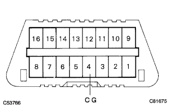
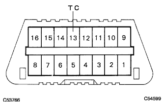

SRS Airbag System TC terminal circuit |
| Step 1 | Wire harness disconnection inspection (between DLC3-Body Earth) |
|  |
Separate the battery's minihana stormy and wait for 90 seconds.
Use SST (Toyota Electrical Tester) to inspect the resistance between the DLC3 CG terminals and the body earth.
|
| ||||
| OK | |
| Step 2 | Wire harness disconnection inspection (between DLC3-Body Earth) |
|  |
Connect the battery minor stormy and turn on the IG switch.
Use SST (Toyota Electrical Tester) to inspect the voltage between the TC terminals and body earth of DLC3.
|
| ||||
| OK | |
| Step 3 | Wire harness short circuit inspection (between DLC3-body earth) |
Set the IG switch to OFF (Lock).
Separate the battery's minihana stormy and wait for 90 seconds.
Use SST (Toyota Electrical Tester) to check the resistance between TC terminals and body earth of DLC3.
|
| ||||
| OK | ||
| ||